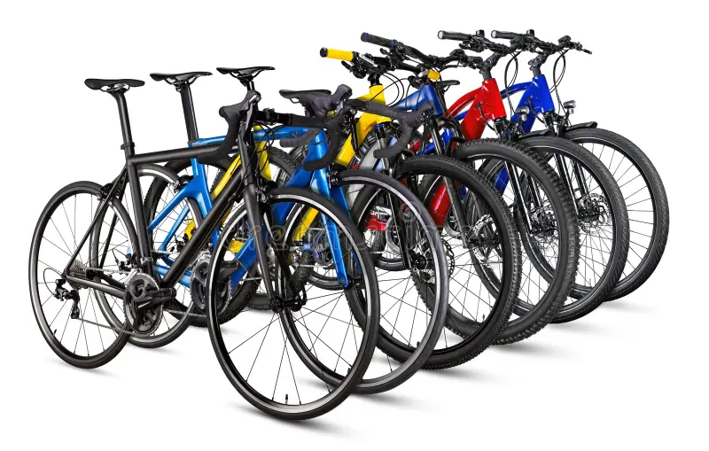

Alquiler de bicicletas

Alquila una bicicleta. Incluye casco y candado, perfecta para moverte sin afanes por la ciudad.
Alquiler de bicicletas en Medellín para descubrir la ciudad a tu ritmo.

Alquila una bicicleta. Incluye casco y candado, perfecta para moverte sin afanes por la ciudad.
Explora Medellín en bicicleta con nuestros alquileres, recorridos guiados y servicio de taller.
Consulta las tarifas de alquiler Reservar ahoraEn Rueda Libre alquilamos bicicletas para que descubras la ciudad y sus alrededores de una manera divertida y ecológica. Nuestro objetivo es promover el uso de la bicicleta como medio de transporte y recreación.

Descubre los mejores lugares de Medellín y conoce la ciudad sobre ruedas.
Contamos con un taller básico para el mantenimiento de tu bicicleta y asesoramiento técnico.
Estamos ubicados en Medellín, Antioquia. Ver ubicación de Rueda Libre en Google Maps (abre en pestaña nueva)